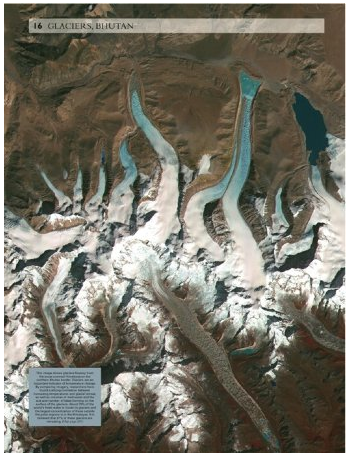

Thu, 04 Nov 2010 02:16:00 ·
Earth from Above on Your Atlas
The new Oxford Atlas of the World features amazing photos, taken from above the Earth’s surface.

See some more awesomeness here.
Thu, 04 Nov 2010 02:16:00 ·
The new Oxford Atlas of the World features amazing photos, taken from above the Earth’s surface.

See some more awesomeness here.